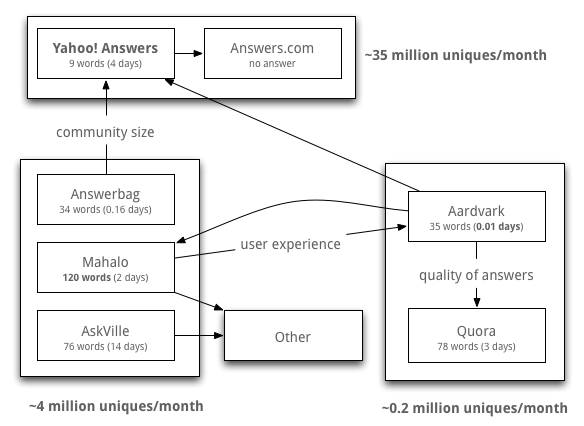

The best question answering sites
There are hundreds of question answering sites on the Internet. Most of them focus on specific topics (Stack Overflow for software engineering, Hacker News for startups, etc). However, a number of Q&A sites exist for answering any kind of question, including the contentious "How is Babby formed?". Open domain Q&A sites have a distinct advantage over closed domain sites, since there is no need to know which closed domain site is most appropriate for the question at hand. Still, the asker needs to decide which open domain Q&A site to ask on! What follows is a self-referential approach to ranking popular open domain Q&A sites.
Who questions the Q&A sites?
I compiled a list of the top 7 most popular Q&A sites. Since alexa.com doesn't track subdomains (ex. answers.yahoo.com, and askville.amazon.com), I was forced to use compete.com. I then asked each popular site a "recursive" question:
What is the best question answering site (besides $SITENAME), and why?
Eventually, most Q&A sites responded with one or two answers, which I harvested and analyzed. Clearly this sample is too small to draw any scientifically valid conclusions, so my analysis is anecdotal at best. Still it paints an interesting picture of the open domain Q&A space. In addition to the responses themselves, I looked at other data, such as response time and response length. The following diagram summarizes the results.

The arrows in the above diagram represent recommendations from one community to another. The surveyed Q&A sites are grouped based on popularity into three buckets. The most popular bucket includes Yahoo! Answers and Answers.com, with 44 million and 31 million monthly uniques respectively. Despite having been around for the longest (Answers.com launched in 1996), these are the most useless Q&A websites. It took 4 days to get the answer "Another good answering site is answers.com" from a Y! Answers member, and no response ever came from Answers.com in 3 weeks.
The moderately popular bucket of Q&A sites includes Answerbag, Mahalo Answers and AskVille. These sites get about 4 million uniques a month, and generally gave reasonable answers. Mahalo answers yielded the longest response, a 120 word paragraph recommending Aardvark. The least visited sites and relative newcomers to the scene are the most promising and active communities. Aardvark's response speed is unparalleled, the first answer taking just 17 minutes, probably due to GTalk integration. While Quora didn't actually yield a Q&A site recommendation, the respondent produced an reasonable retort to my rather questionable question.
A Q&A "uber-site" that will do a good job being all things to all people is simply not going to happen - it is like "one size fits all" underwear, which never really fits anyone.
The Ranking
Overall, here's my anecdotal list of top 7 open domain Q&A sites (and links to the questions I posted):
- Aardvark – Quick answers to your questions. Welcome to Aardvark!
- Quora - Your question is flawed. Allow me to explain why.
- Mahalo – I'll answer your question with quite a bit of detail, but it'll take a while.
- Answerbag - heres a decent answer but forget punctuation
- AskVille - Takes forever to give you a really bizarre answer.
- Yahoo! Answers – This community is brain damaged. Don't bother.
- Answers.com – This community is inactive. Don't bother.
With a lot more answers from the Q&A communities, and some notion of weight, you could imagine doing a PageRank-style calculation to determine a more meaningful ordering of the top Q&A sites. We leave the details of that approach to the reader :) PS. Thanks Sean, Jenn and Pat!